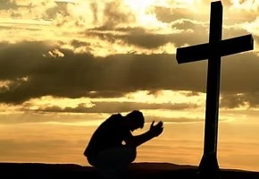
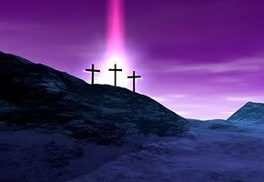
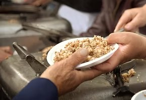
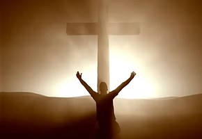

Se morreres HOJE sabes para onde irás por toda a eternidade?
"E o testemunho é este: que Deus nos deu a vida eterna; e esta vida está em seu Filho. Quem tem o Filho tem a vida; quem não tem o Filho de Deus não tem a vida" (1 João 5.11-12). Este versículo da Bíblia Sagrada nos diz que Deus tem-nos dado vida eterna e esta vida está no Seu Filho, Jesus Cristo. Ou seja, para termos a vida eterna temos que ter o Filho de Deus. E aí vem a calhar a pergunta: como uma pessoa pode ter o Filho de Deus?
Somos Pecadores
Os pecadores que creem são salvos pela graça de Deus:
“Porque todos pecaram e destituídos estão da glória de Deus; sendo justificados gratuitamente pela sua graça, pela redenção que há em Cristo Jesus.”Romanos 3.23,24

Precisamos Arrependermo-nos
O perdão de Deus ocorre mediante o arrependimento e conversão:
“Arrependei-vos, pois, e convertei-vos, para que sejam apagados os vossos pecados, e venham assim os tempos do refrigério pela presença do Senhor.”Atos 3.19

Deus Providenciou Um Salvador
Somente Cristo pode perdoar os nossos pecados:
“A este dão testemunho todos os profetas, de que todos os que nele creem receberão o perdão dos pecados pelo seu nome”Atos 10.43
“Deixe o ímpio o seu caminho, e o homem maligno os seus pensamentos, e se converta ao Senhor, que se compadecerá dele; torne para o nosso Deus, porque grandioso é em perdoar.”Isaías 55.7
A Salvação É-nos Dada Por Cristo
O perdão de Deus expressa o seu grande amor por nós:
“Porque Deus amou o mundo de tal maneira que deu o seu Filho unigênito, para que todo aquele que nele crê não pereça, mas tenha a vida eterna.”

Boas Obras Não Salvam
Atos de caridade ou bom comportamento não salvam:
“Porque pela graça sois salvos, por meio da fé; e isto não vem de vós, é dom de Deus. Não vem das obras, para que ninguém se glorie.”Efésios 2.8,9
Sem Cristo a Condenação é Certa
O perigo de morrer sem se converter:
“Vivo eu, diz o Senhor Deus, que não tenho prazer na morte do ímpio, mas em que o ímpio se converta do seu caminho, e viva. Convertei-vos, convertei-vos dos vossos maus caminhos; pois, por que razão morrereis, ó casa de Israel?”Ezequiel 33.11
Estaremos um Dia com Cristo
Antes de passarmos para a eternidade precisamos estar salvos:
“Preciosa é à vista do Senhor a morte dos seus santos.”Salmos 116.15
“E ouvi uma voz do céu, que me dizia: Escreve: Bem-aventurados os mortos que desde agora morrem no Senhor. Sim, diz o Espírito, para que descansem dos seus trabalhos, e as suas obras os seguem.”Apocalipse 14.13
Cristo Prometeu-nos o Céu
Cristo garante uma morada especial para os salvos:
“Na casa de meu Pai há muitas moradas; se não fosse assim, eu vo-lo teria dito. Vou preparar-vos lugar.”João 14.2

Aceite Cristo em seu Coração
Deseja confessar a Cristo como Salvador?
“Mas que diz? A palavra está junto de ti, na tua boca e no teu coração; esta é a palavra da fé, que pregamos, a saber: Se com a tua boca confessares ao Senhor Jesus, e em teu coração creres que Deus o ressuscitou dentre os mortos, serás salvo. Visto que com o coração se crê para a justiça, e com a boca se faz confissão para a salvação”Rm 10.8-10